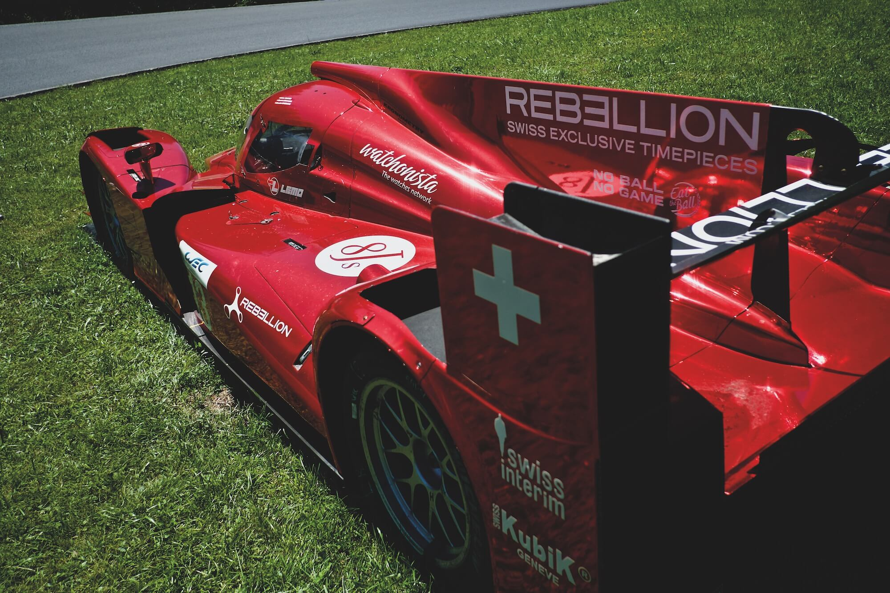
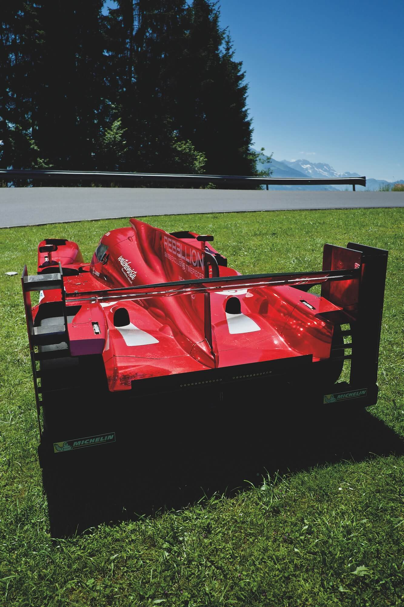
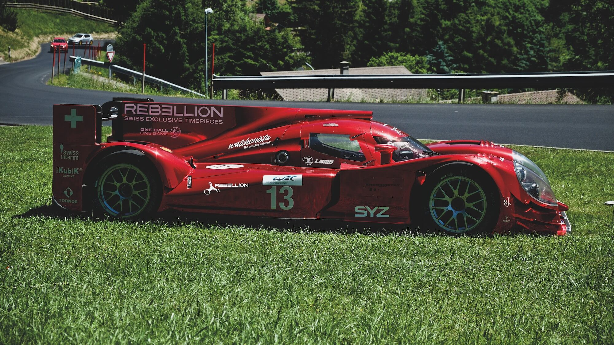
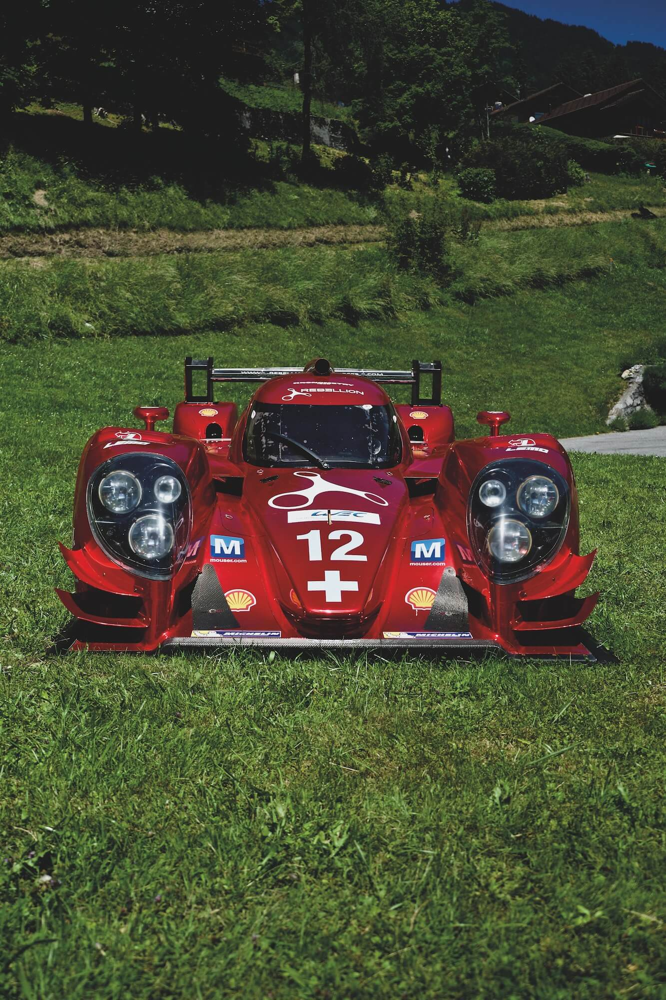

Issue 00
Le Mans prototype Swiss style
Rebellion Racing R1
You don't expect to see a LMP car up a mountain. On the way up to the small Swiss village of Villars, we found one parked in the middle of a grassy hairpin.

1300m up an alp is not the usual location for a Le Mans prototype race car, even a Swiss one, but it was the weekend of the mythic 24 hour race. Perhaps the team owner lives in one of the multi-million chalets, or perhaps the sponsor does. Villars had no answers and neither did Google.
Rebellion Racing is a Swiss independent team with Oreca designed LMP cars racing in the FIA World Endurance Championship. Their sister company is Rebellion timepieces. This car is the Rebellion racing R-ONE LMP, a previous Le Man racer, now replaced.



